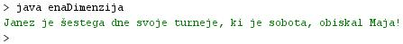

- Tabele, ki smo jih spoznali v prejšnji uèni enoti, omogoèajo hranjenje skupin sorodnih podatkov.
- Kot primer smo spoznali tabelo "dan", ki je seznam dni v tednu.
- Ker smo opazovali dneve v enem samem tednu, smo jih lahko med seboj razlikovali že s pomoèjo enega samega indeksa.
- Te opazovane dneve smo lahko razporedili enega za drugim v ravni èrti v eni sami smeri, denimo vodoravni smeri.

- Primer 1: Janez se je doloèil za enotedensko obiskovanje nekaterih svojih prijateljic in prijateljev. Vsak dan je obiskal drugega prijatelja. Naredimo tako tabelo, ki bo imela vsebovala imena obiskanih prijateljev po posameznih dnevih v tednu. Tabelo poimenujmo "obiskiEnTeden".
pon tor sre èet pet sob ned 0 1 2 3 4 5 6 Tine Tone Jure Meta Mara Maja Minka - Èe bi želeli hraniti podatke po dnevih, ki bi pripadali trem tednom, ki si sledijo, bi lahko te tri tedne postavili enega ob drugega.
- Primer 2: Janez se je doloèil za tritedensko obiskovanje vseh svojih prijateljic in prijateljev. Vsak dan je obiskal drugega prijatelja. Naredimo tako tabelo, ki bo imela vsebovala imena obiskanih prijateljev po posameznih dnevih v posameznem tednu. Poimenujmo tabelo "obiskiTrijeTedni".
pon tor sre èet pet sob ned 0 1 2 3 4 5 6 teden1 0 Tine Tone Jure Meta Mara Maja Minka teden2 1 Mojca Mare Jože Jure Joco Jaka Jošt teden3 2 Jolanda Nejka Tina Teja Tadeja Mateja Irena - Tudi ta podatkovna struktura je tabela, ki pa se razlikuje od zgornje tabele.
- Èe smo v tabeli "obiskiEnTeden" želeli izlušèiti vsebino posameznega elementa ali mesta v tabeli, smo potrebovali le en podatek.
- Podati smo morali vrednost indeksa, ki kaže na mesto v tabeli "obiskiEnTeden", katerega vsebino želimo obravnavati.
- Èe nas zanima, koga je Janez obiskal v soboto, uporabimo indeks "5" in vsebina lokacije, na katero kaže ta indeks, je "Maja".
- V Javi storimo to na tak naèin: vsebina = obiskiEnTeden[5];
- Èe pa želimo izvedeti s pomoèjo tabele "obiskiTrijeTedni", koga je Janez obiskal v petek ob priliki svoje tritedenske turneje, pa ugotovimo, da je v petek obiskal tri prijatelje, saj so na voljo trije petki.
- Za natanèno doloèitev mesta v tej tabeli moramo povedati še, kateri teden od treh obstojeèih imamo v mislih.
- Potrebujemo torej še en podatek.
- Ta podatek je števec tednov, ki nam pokaže na želeni teden.
- Potrebujemo torej še en indeks; poleg indeksa dni imamo sedaj še indeks tednov.
- Èe nas zanima, koga je Janez obiskal v petek v tretjem tednu svojega obiskovanja, uporabimo indeks dni "4" in indeks tednov "2". Vsebina lokacije, na katero kažeta ta dva indeksa, je "Tadeja".
- V Javi storimo to na tak naèin: vsebina = obiskiTrijeTedni[4][2];
- Ker potrebujemo za delo s tabelo "obiskiTrijeTedni" dva indeksa, imenujemo to tabelo dvodimenzionalna tabela.
- Èe smo torej pri programiranju obdelave enodimenzionalnih tabel potrebovali eno zanko, bomo za obdelavo podatkov, shranjenih v dvodimenzionalnih tabelah, potrebovali dve zanki.
- V okolju za pisanje izvorne kode v jeziku Java, za prevajanje in za interaktivno delo zapiši zgornji program "enaDimenzija". Pomagaj si s sliko.
- Kodo lahko tudi kopiraš iz te datoteke in jo prilepiš v okolje, v katerem pišeš programèke. Pozor: koda, ki jo boš kopiral/a, vsebuje eno, dve, tri ali štiri napake. Èe želiš, da bo program deloval, moraš napake odkriti in jih odpraviti.
- Izvorno kodo shrani pod imenom "ImePriimek29.java". ImePriimek je seveda tvoje lastno ime in priimek.
- Datoteko "ImePriimek29.java" prevedi.
- Prevedeno datoteko zaženi, preveri rezultat v interaktivnem oknu in poklièi profesorja, da vidi rezultat.
1. Kaj je naloga tabel?
2. Koliko indeksov potrebujejo za delo s podatki enodimenzionalne tabele?
3. Koliko znaša indeks sobote v primeru 1 te uène enote?
4. Kateri dan po vrsti v tednu je sobota, èe zaènemo dan s ponedeljkom?
5. Koga je obiskal Janez v soboto v primeru 1 v tej uèni enoti?
6. Koliko indeksov potrebujejo dvodimenzionalne tabele?
7. S kakšno barvo je oznaèen indeks posameznih dni v primeru 2 v tej uèni enoti?
8. S kakšno barvo je oznaèen indeks tednov v primeru 2 v tej uèni enoti?
9. Koga je obiskal Janez v petek v tretjem tednu v primeru 2 v tej uèni enoti?
10. Koliko zank potrebujemo za delo z dvodimenzionalnimi tabelami?
2. Zapiši od ene do pet kljuènih besed, ki povzemajo vsebino te uène enote.
3. Povezave do dodatnih informacij.
Gradiva na spletnih straneh fakultete za matematiko in fiziko v Ljubljani.
Spletni priroènik proizvajalca programskega okolja Java. To je podjetje Sun.